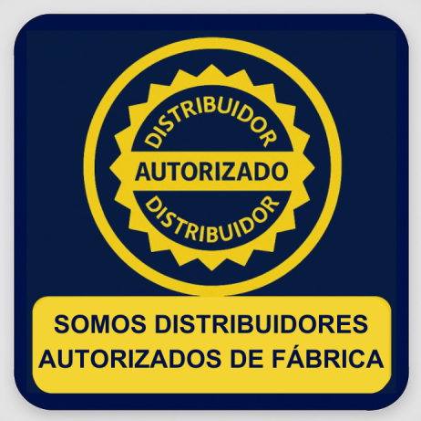
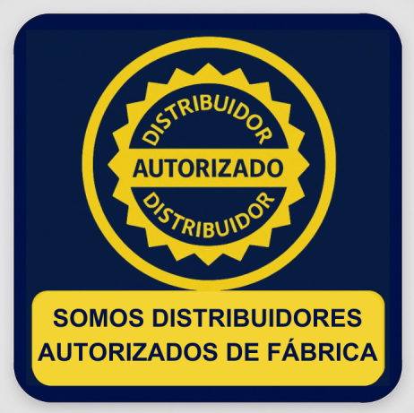

Pulsa üëÜ para + informaci√≥...
• 100% sellada y libre mantenimiento.
• Para carros con mayor consumo eléctrico.

Pulsa üëÜ para + informaci√≥...
• Híbrida es decir.
• Libre y bajo mantenimiento según su aplicación.

Pulsa üëÜ para + informaci√≥...
• Potencia de arranque premiun y alto desempeño.
• Libre mantenimiento. Aleación plomo calcio.
• 18 Meses de garantía ó 40.000 Km.

Pulsa üëÜ para + informaci√≥...
• Mejor desempeño y durabilidad. Con mantenimiento preventivo cada 6 meses.
• Muy bajo consumo de agua.
• 18 Meses de garantía ó 40.000 Km.

Pulsa üëÜ para + informaci√≥...
• Durabilidad y desempeño para uso profesional y severo.
• Aleación plomo calcio. Para uso de autos de trabajo.
• 12 Meses de garantía ó 70.000 Km.

Pulsa üëÜ para + informaci√≥...
• Solución rentable para arranque seguro.
• Mantenimiento preventivo cada 4 meses.
• 15 Meses de garantía ó 30.000 Km.

Pulsa üëÜ para informaci√≥...
• Para carros híbridos o de sistema Start Stop.
• Tecnología EFB - AGM.
• Garantía extendida.
 


Teléfono: 3 262-781 / +593 99 243 2764
Email: ventas@autobateriascap.com
Dirección: Av. Eloy Alfaro entre Nogales N49-58 y Chamburios.
Solicita Asistencia.
Horario: lunes a viernes de 8h30 a 18h30
Sábados de 8h30 a 13h30